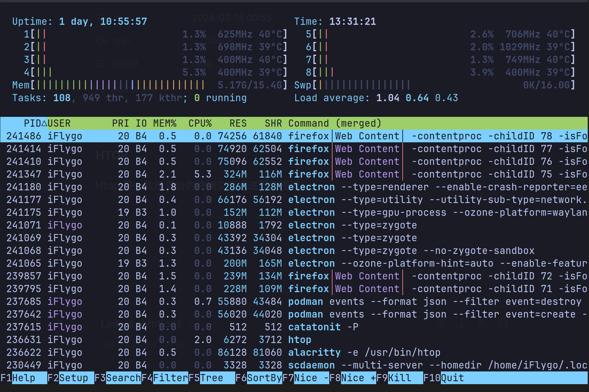

HTOP
Htop 是一款跨平台的终端交互式进程监视器。1
界面介绍

CPU2
- 红色: kernel thread 占用，像是系統需要自動做 process scheduling、memory management 等等，是整個系統中最重要、優先權也最高的任務
- 绿色: normal priority thread, 排程的優先權比 kernel thread 低一些，一般來說使用者執行的程式如果沒有特別調優先權的話，都會歸在這一類
- 蓝色: low priority thread，因為優先權比較低，分配到的 CPU 自然也比較少，適合「我 ok，你先跑」那類比較無關緊要的 process，如果 CPU 已經被操到快不行了，或是 memory 真的不夠用了，第一個殺掉的也是這類 process